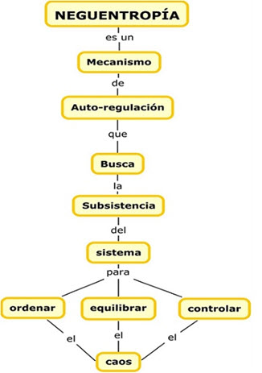

Neguentropía
Para alcanzar sus objetivos, un sistema requiere de energía la cual es transformada. En dicha transformación, los sistemas poseen una tendencia a buscar un estado más probable o estable que por lo general tiende a ser un estado más caótico.
Los sistemas abiertos intercambian con su entorno energía e información, tienden hacia una evolución constante y una estructura organizacional dinámica. Son capaces de conservar estados de organización improbables.
Los sistemas cerrados son aquellos que no intercambian con el entorno, generalmente producidos en condiciones de laboratorio e inexistente en la naturaleza y la sociedad. El ser cerrados es más bien una característica de la teoría o falta de conocimiento para conocer los intercambios que realiza con el entorno.
La entropía puede considerarse como la tendencia que tienen los sistemas a su progresiva desorganización y su homogeneización con el ambiente. Los sistemas cerrados están irremediablemente condenados a la desorganización. No obstante hay sistemas que, al menos temporalmente, revierten esta tendencia al aumentar sus estados de organización. También puede definirse como el desgaste que el sistema presenta por el transcurso del tiempo o por el funcionamiento del mismo. Los sistemas altamente entrópicos tienden a desaparecer por el desgaste generado por su proceso sistémico.
En un sistema cerrado la entropía siempre debe ser positiva. Sin embargo, en los sistemas abiertos biológicos o sociales, la entropía puede ser reducida o mejor aún transformarse en entropía negativa o neguentropía, es decir, un proceso de organización más completo y de capacidad para transformar los recursos. Esto es posible porque en los sistemas abiertos los recursos utilizados para reducir el proceso de entropía se toman del medio externo. Así mismo, los sistemas vivientes se mantienen en un estado estable y pueden evitar el incremento de la entropía y aun desarrollarse hacia estados de orden y de organización creciente. La neguentropía, entonces, se refiere a la energía que el sistema importa del ambiente para mantener su organización y sobrevivir.

Bibliografía:
• Universidad Nacional de Colombia. Teoría de Sistemas. Recuperado el 7 de Septiembre de 2020
• Ingeniería de Sistemas. Neguentropía Recuperado el 7 de Septiembre de 2020.
• Flórez A. and Thomas, J. (1993). La Teoría General de Sistemas Recuperado el 7 de Septiembre de 2020.